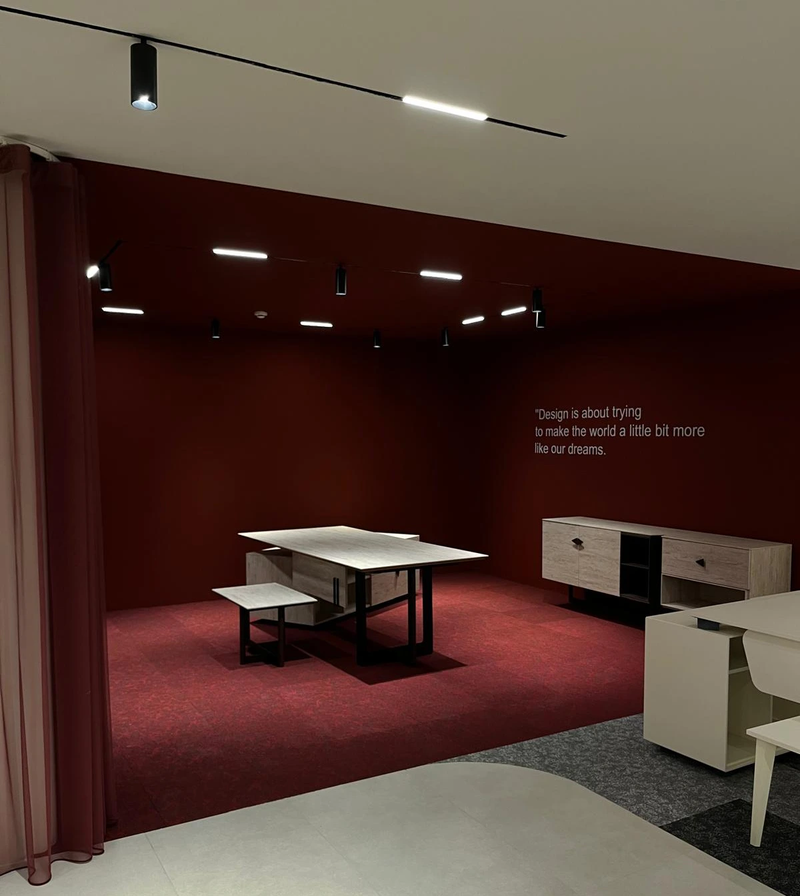

Burak Yapı & İnşaat, modern mühendislik çözümleri ve estetik tasarım anlayışıyla yaşam alanlarınıza değer katar. Geleceği bugünden sağlam temeller üzerine inşa ediyoruz.
Proje Teslimi
Yıllık Tecrübe
Müşteri Sadakati
Uzman Kadro
Uzmanlık Alanlarımız
Planlamadan teslime kadar her aşamada profesyonel proje yönetimi ve kusursuz işçilikle hayallerinizdeki yapıları inşa ediyoruz.
İç mekanlarınızda modern mimari hatları ve fonksiyonelliği birleştirerek, yaşam kalitenizi artıran konseptler tasarlıyoruz.
Eski yapıları günümüz teknolojisi ve estetik anlayışıyla yeniden yorumluyor, dayanıklı ve şık yaşam alanları oluşturuyoruz.

VİZYONUMUZ
Hüsamettin ve Burak Çırakoğlu liderliğinde, inşaat sektöründe güvenin sembolü haline geldik. Her projemizde en küçük detaya kadar mükemmelliği hedefliyoruz.
Dürüstlük, kalite ve zamanında teslimat ilkelerimizden ödün vermeden, Türkiye'nin yapı sektöründeki standartlarını yukarı taşımaya devam ediyoruz.
Adım Adım Güven
Sizinle bir araya gelerek projenizin detaylarını, beklentilerinizi ve bütçenizi dinliyoruz. Uzman ekibimizle alanı yerinde inceleyerek en uygun mühendislik stratejisini belirliyoruz.
Hayalinizdeki yapıyı inşaat başlamadan önce görmenizi sağlıyoruz. Mimarlarımız, estetik ve fonksiyonelliği birleştirerek size özel, detaylı 3D modellemeler sunar.
Onaylanan projenin yapım aşamasına geçiyoruz. Birinci sınıf malzemeler ve deneyimli kadromuzla, güvenlik standartlarından ödün vermeden inşayı sürdürüyoruz.
Belirlenen takvime birebir uyarak projenizi eksiksiz teslim ediyoruz. Burak Yapı güvencesiyle, kullanım süresince de tüm teknik destek ihtiyaçlarınızda yanınızdayız.
Büyük Değişimler
Hayallerinizdeki mekanı baştan yaratıyoruz. Yıkık dökük alanların nasıl ultra lüks yaşam alanlarına dönüştüğünü inceleyin.
Öne Çıkan Çalışmalar
Merak Edilenler
Projenin kapsamına bağlı olarak, standart lüks bir konut inşaatı inşaat izinlerinin ardından ortalama 6 ile 12 ay arasında tamamlanmaktadır. Süreç, proje onayından anahtar teslimine kadar her aşamada tarafımızca yönetilir.
Evet, Ankara genelinde tüm tadilat ve inşaat projeleriniz için ücretsiz keşif hizmeti sunuyoruz. Uzman ekibimiz yerinde inceleme yaparak size en uygun maliyet ve zaman planını hazırlar.
Tüm uygulamalarımızda TSE onaylı, birinci sınıf malzemeler kullanıyoruz. Yapılan işçilik ve kullanılan malzeme kalitesi Burak Yapı güvencesi altındadır. Uygulama sonrası teknik destek ihtiyaçlarınızda her zaman yanınızdayız.
Ödemeler genellikle projenin belirli aşamalarına (başlangıç, kaba inşaat, ince işler vb.) bölünerek hak ediş usulüyle gerçekleştirilir. Proje başında karşılıklı mutabık kalınan bir sözleşme ile tüm finansal süreç şeffaf hale getirilir.